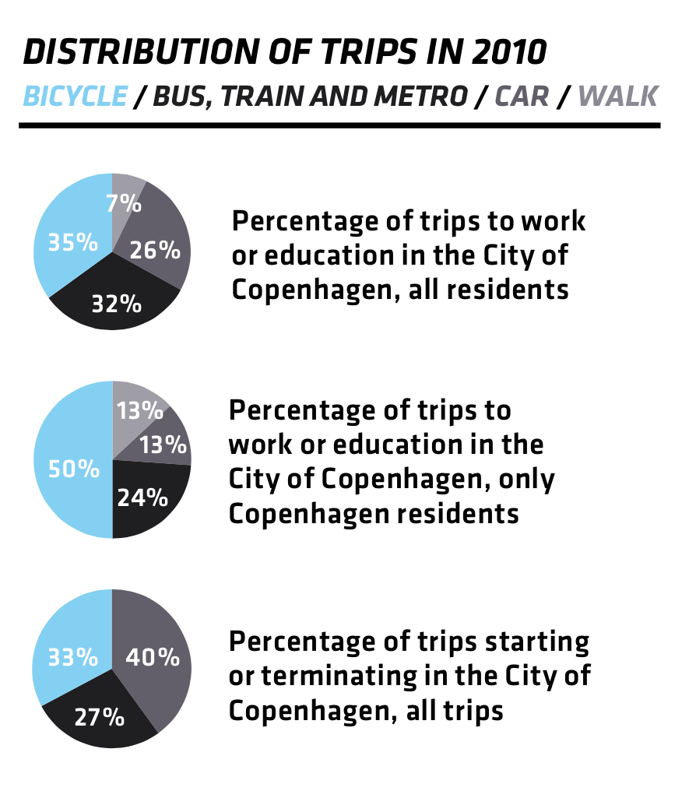
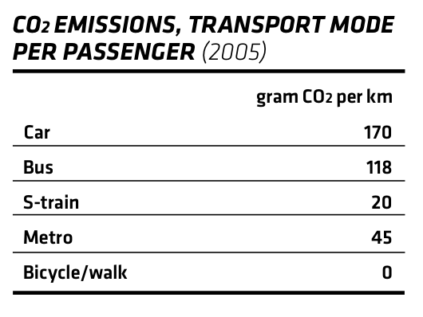

Copenhagen Overview

Copenhagen Facts
- S-Train (urban rapid transit network) offers extremely affordable public transportation.
- One of the world's most bike-friendly cities - as of 2010, 84% of residents have bike access and 35% cycle to work or school, while just 26% drive for the same purpose. 32% use PT and 7% walk.
- 200% tax on new cars scares off buyers - 46% of Danish households have one vehicle at their disposal, while 41% do not own a car.
- Everyday, 750,000 miles are bicycled in Copenhagen cumulatively, and Copenhagen is pioneering bicycle superhighways, completely free from cars. In fact, almost as many people commute by bicycle in greater Copenhagen as do those who cycle to work in the entire United States.
- Fewer cars helps not only with air quality, but also with noise pollution.
European Transportation Culture
- High incentive to innovate transportation in Europe particularly, as most major European cities were developed before the advent of cars (narrow streets), gas prices are absurdly high and 1992 Kyoto Protocol commits members to steadily reduce carbon emissions.

- Common Policy Goals: spur economic recovery, reduce greenhouse emissions, build sustainable infrastructure.
- "The methods vary, but the mission is clear - to make car use expensive and just plain miserable enough to tilt drivers toward more environmentally friendly modes of transportation." - NY Times
- EU support/influence
- Quality of life benefits
Back